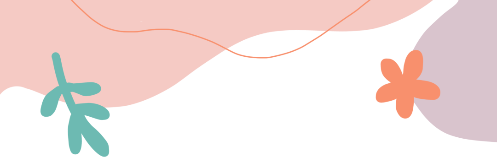
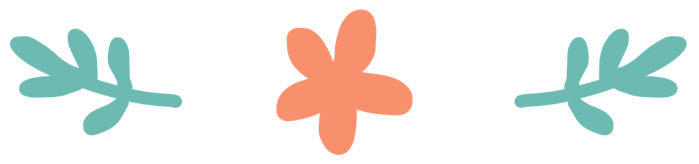
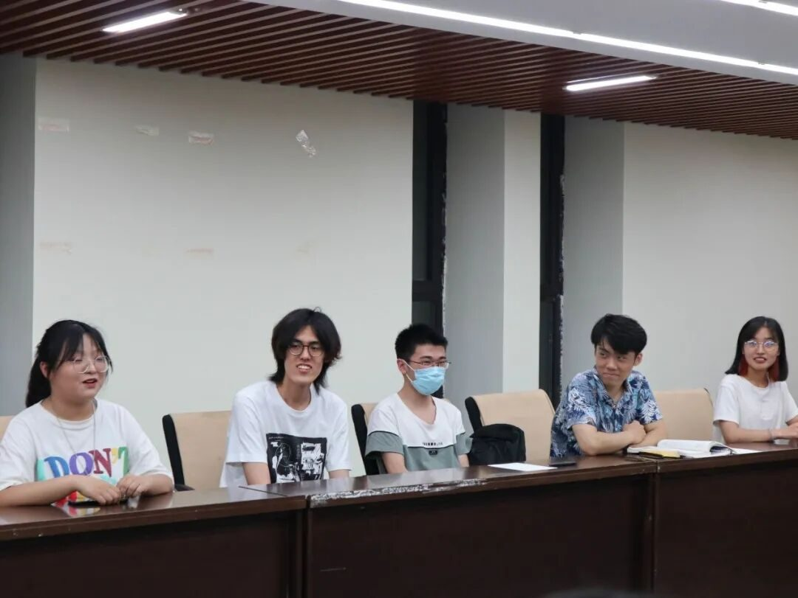
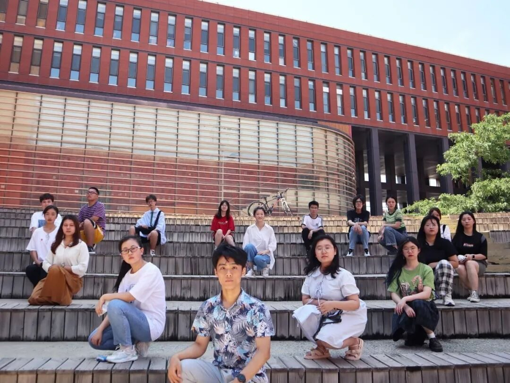

【徜扬恣肆·十五】江南如画，扬州令我向往

江南如画 扬州令我向往

行者相遇，积极筹备

怀揣着对行者无疆团队的憧憬，我们18个人走到了一起，决心参与此次寓绻淮扬主题文化调研。
第一次见面会大佬、萌新围坐会议室。大家或从容、或羞涩、或惊喜，彼此相识留下了美好的印象。
随着越来越多的活动、会面，大家各司其职，越发熟悉，越发团结，一场优秀的社会实践的轮廓越发清晰。
疫情反弹，意外变故
暑假前夕，突如其来的江苏疫情反弹牵动了全国人民的心，也切实影响了我们的行程计划，考虑实践安全、迎合防疫需求，我们放弃了线下实践的形式。
在实践之路未启航前我们就提前上了一课，更意识到了防疫的必要性，希望这波疫情能够早日被控制住，其他城市也要引以为戒，疫情防控不可松懈，防疫反弹，需警钟长鸣！
线上调研，受益匪浅
左右滑动查看更多
实践推迟后，队长一直积极协调，经过商讨决定以线上的形式完成此次文化调研。得知消息欣喜不已的我又心存疑虑：互联网+社会实践会碰撞出怎样的火花呢？
丰富的实践形式、多彩的实践内容、讲解员的悉心讲解，仿若将一幅扬州山水画呈现在眼前。其中对于扬州八怪纪念馆馆长的采访让我印象深刻！
在采访中，馆长讲自己的博学的知识、敏锐的洞察、新颖的观点热情地一一讲述，让我们受益匪浅！实践中收集的问卷也让我们对于社会上对于扬淮文化的看法有了一定的认识。
完美收官，未曾别离

此次文化调研告一段落，大家受益良多，真真正正地感受到了大学生社会实践的意义。
大家生活在同一个校园，这次活动结下的友谊却是不会随活动结束消散的，行者是不会止步的，行者无疆的精神也会传承下去，行者无疆社会实践团队的影响力和知名度也会越来越大!
来源 | 行者无疆实践团
文字 | 于金奥
排版 | 赵庭芳
审核 | 付媛 康艳虎